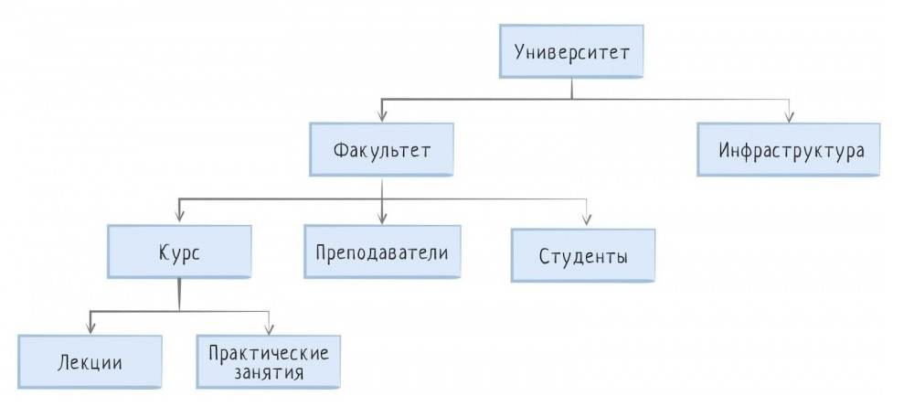

Иерархическая
Иерархическая модель данных – это огромный комплекс взаимосвязанных объектов высшего и низшего уровня. Все они пребывают в теснейшем взаимодействии, обеспечивая целостное и автономное функционирование системы. Каждый элемент системы способен одновременно состоять из десятков, а иногда и сотен объектов низшего уровня, и параллельно с этим находиться в подчинении вышестоящего объекта.
На вершине иерархии находится только один объект, который принято называть «корнем дерева». От него исходят объекты следующего уровня, и так далее в четкой последовательности, вплоть до бесконечности. Связи между структурными элементами одного уровня отсутствуют. Из этого следует, что объекты в иерархической базе данных не являются равноправными. Поскольку все они в той или иной степени зависят друг от друга. Если из двух элементов один находится ближе к вершине, его принято называть «предком». Если ниже уровнем – «потомком». Также следует отметить, что «потомков», находящихся на одном уровне иерархии, и исходящих от одного и того же предка, принято называть «близнецами» или «братьями». Принцип работы иерархической БЗ основывается на вертикальном взаимодействии, начиная с вершины. Другой формат взаимодействия в данном случае не предусмотрен. Это обусловлено тем, что каждый компонент иерархии связан только с одним объектом на верхнем уровне и несколькими объектами на нижнем.
Сетевая
Сетевая модель данных — это логическая модель данных, представляющая данные сетевыми структурами типов записей, связанных отношениями мощности один-к-одному или один-ко-многим. Эта модель была популярна в 1960-х и 1970-х годах, но со временем уступила место другим моделям, таким как реляционная модель данных.
Основные элементы и характеристики сетевой модели данных:
- Записи: Основные единицы данных, имеющие уникальное имя и содержащие набор полей.
- Типы записей: Различные типы записей могут иметь разные наборы полей и связи с другими записями.
- Связи: Определяют отношения между записями и могут быть однозначными или многозначными.
- Сеть: Набор связанных записей, формирующих структуру данных, где каждая запись может иметь несколько родителей и детей
Реляционная
Реляционная база данных – это набор данных с предопределенными связями между ними. Эти данные организованны в виде набора таблиц, состоящих из столбцов и строк. В таблицах хранится информация об объектах, представленных в базе данных. В каждом столбце таблицы хранится определенный тип данных, в каждой ячейке – значение атрибута. Каждая стока таблицы представляет собой набор связанных значений, относящихся к одному объекту или сущности. Каждая строка в таблице может быть помечена уникальным идентификатором, называемым первичным ключом, а строки из нескольких таблиц могут быть связаны с помощью внешних ключей. К этим данным можно получить доступ многими способами, и при этом реорганизовывать таблицы БД не требуется.
| ID студента | Фамилия | Имя | Возраст |
|---|---|---|---|
| 1 | Иванов | Иван | 20 |
| 2 | Петрова | Мария | 19 |
| 3 | Сидоров | Алексей | 21 |
| 4 | Корнева | Ксения | 20 |
В отличие от иерархических, реляционные БД поддерживают не только модель один к многим, но и многие ко многим. Вдобавок любое изменение в нескольких таблицах БД влияет и на остальные таблицы. Благодаря этому, реляционная БД сохраняет целостность данных во всех приложениях и копиях БД.
Графовая
Графовые базы данных являются одним из наиболее эффективных и мощных инструментов для хранения и обработки связанных данных. Они основаны на теории графов, которая изучает отношения и связи между объектами. В графовых базах данных данные представлены в виде вершин и ребер, где вершины представляют объекты, а ребра – связи между ними.
Графовые базы данных предлагают ряд преимуществ по сравнению с другими типами баз данных:
- Гибкость в моделировании данных
- Эффективность при работе с связями
- Гибкость в запросах
- Масштабируемость
- Анализ связей и отношений